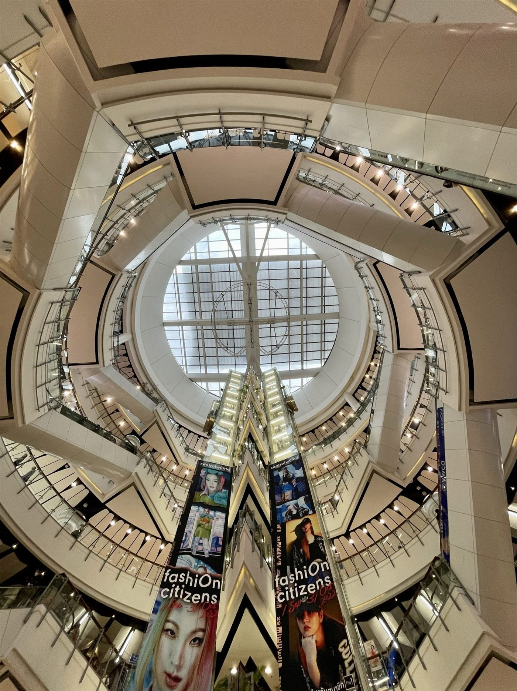

Ratchaprasong · Bangkok
CentralWorld
A city-scale stage for retail.
Bring your brand into a broad shopping environment where fashion sits alongside food, technology, beauty and entertainment.
- Retail setting
- International fashion · Lifestyle · Events
- Rail access
- BTS Chit Lom / Siam
- Commercial snapshot
- Illustrative 14-day proposal below

Photo: Slyronit · CC BY-SA 4.0 · Historical venue photograph; current displays may differ. Credits
The retail character
CentralWorld brings international clothing and sportswear together with a wide range of other retail categories. Its published fashion offer includes Uniqlo, Zara, Adidas and Nike. Shoppers may visit for a particular store, a meal, or a wider day out.
Around the address
The complex is in Ratchaprasong on Rama I Road. Its own programme includes events and seasonal promotions. A retail presence here becomes part of a much larger destination, so the position of an individual unit matters as much as the name of the centre.
Getting here
Reach CentralWorld from BTS Chit Lom or Siam using the elevated Ratchaprasong walkways. The approach is on foot from the station rather than a platform-level entrance.
A fashion business perspective
A simple collection, a clear storefront and an easy-to-understand brand message could work well in this varied setting. Fashion businesses would share attention with established international names and many other activities.
Beyond fashion
Beauty, sportswear, technology, dining and entertainment give visitors several reasons to come. This variety may help a business reach people who did not originally plan to visit a fashion store.
Before you book
Ask for the pedestrian flow at the proposed space, the event calendar for your dates, and the proportion of visitors who are local residents. Centre-wide popularity does not establish who passes a specific unit.
Published information & sources
Venue facts reviewed 5 November 2026. Business perspectives are Brands Bangkok editorial interpretation. Customer ages, visitor numbers and conversion rates are not assumed.
Keep exploring